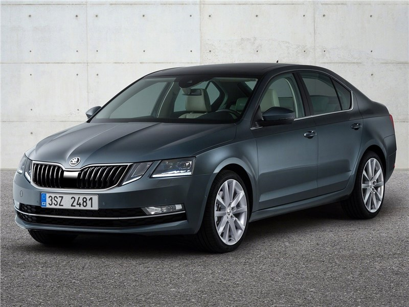

❖❖❖❖╾╾ SKODA OCTAVIA ╾╾❖❖❖❖
Skoda Octavia- автомобиль C класса, выпускаемый в двух кузовах: хэтчбек и универсал. В первом варианте исполнения, габаритные размеры автомобиля составят: длинна 4670 мм, ширина 1814 мм, высота 1476 мм, колесная база 2680 мм, а величина дорожного просвета равняется 155 миллиметрам. Такой клиренс свойственен автомобиля, чья стезя- асфальтированные улицы города и скоростные шоссе. Они хорошо держат дорогу и с легкостью штурмуют бордюры средней величины. Универсал, в свою очередь, получился на 6 миллиметров длиннее и на 4 миллиметра выше.
Багажник Skoda Octavia может порадовать своей вместительностью, хэтчбек предлагает вам 568 литров свободного пространства при поднятых спинках второго ряда сидений. Это поистине впечатляющий показатель, благодаря которому автомобиль будет практичен как в повседневной жизни, так и в дальней дороге с обилием багажа и несколькими пассажирами на борту. Если сложить второй ряд, то можно освободить вплоть до 1558 литров. Универсал более вместительный, он предлагает 588 литров при поднятых спинках и 1718 при сложенных.
Skoda Octavia оборудуется тремя силовыми агрегатами а также механической, автоматической или роботизированной коробками переменных передач. Благодаря такому разнообразию автомобиль отвечает большинству запросов потенциальных покупателей, каждый сможет подобрать комплектацию по вкусу и кошельку. Он понравиться как любителям спокойной и экономичной езды, так и фанатам драйва.
Skoda Octavia обладает богатой технической начинкой, внутри вы найдете массу полезных систем и хитроумных устройств, призванных сделать вашу поездку комфортной, интересной, а самое главное- безопасной. Так, автомобиль оборудуется: шестью подушками безопасности, штатными парковочными датчиками, камерой заднего вида, климат-контролем, многофункциональным бортовым компьютером, датчиками света и дождя, полным электропакетом, подогревом зеркал, стекол сидений и руля, пассивным или активным круиз-контролем, адаптивными фарами головного освещения, системой контроля мертвых зон, кожаным салоном, сиденьями с электрическими регулировками, лифтом и запоминанием параметров, аудиосистемой премиум класса, панорамой стеклянной крышей, штатной навигационной системой, электроприводом крышки багажника и даже системой автоматической парковки.


| Кузов | Лифтбек |
| Кол-во дверей | 5 |
| Класс автомобиля | С Plus |
| Cтрана производитель | Чехия |
| Сборка | Россия, Чехия |
| Год выпуска | 2013 |
| Длина | 4659 мм |
| Ширина | 1814 мм |
| Высота | 1461 мм |
| Радиус разворота | 5.2 м |
| Клиренс | 155 мм |
| Колесная база | 2686 мм |
| Ширина передней колеи | 1549 мм |
| Ширина задней колеи | 1520 мм |
| Размер шин | 195/65 R15; 205/55 R16; 225/45 R17 |
| Радиус дисков | 6.0Jx15″; 6.5Jx16″; 7.0Jx17 |